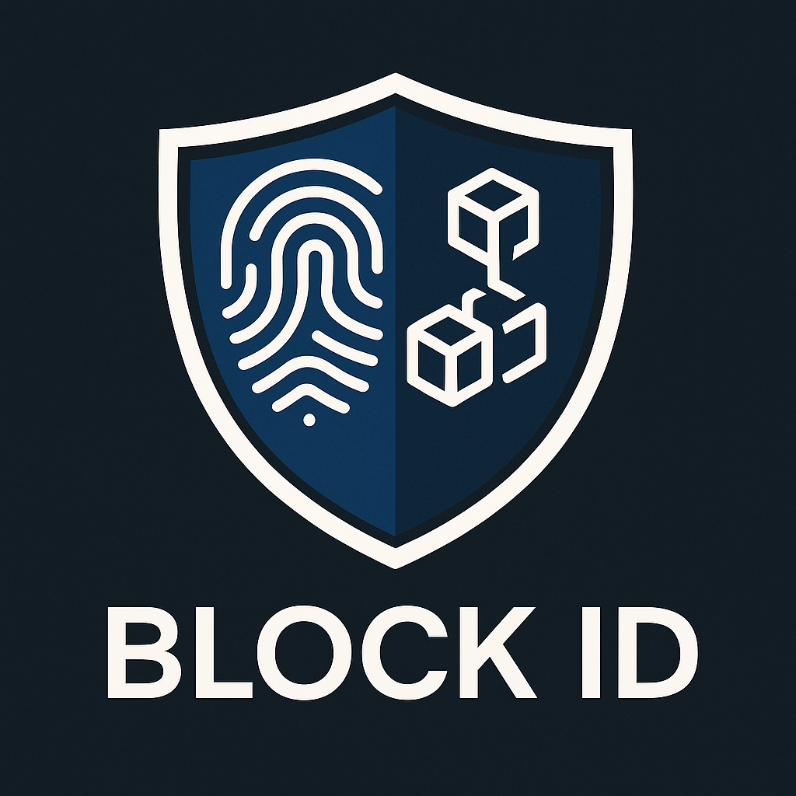

Blockchain Verification System
Built a simplified blockchain-based identity verification prototype to demonstrate tamper-evident record storage and verification flow.
Role: Quality Assurance • Outcome: prototype + unit tests
PythonFlaskHardhatMetaMask

Personal Portfolio Website
Responsive portfolio built from scratch with focus on accessibility and mobile-first design. This site (and its assets) demonstrate UI polish and deployment practices.
Role: Designer & Developer • Outcome: deployed portfolio